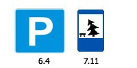
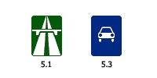

На автомагистралях запрещается:
движение пешеходов, домашних животных, велосипедов, мопедов, тракторов и самоходных машин, иных транспортных средств, скорость которых по технической характеристике или их состоянию менее 40 км/ч;
движение грузовых автомобилей с разрешенной максимальной массой более 3,5 т далее второй полосы;
остановка вне специальных площадок для стоянки, обозначенных знаками знаком 6.4 "Место стоянки" или 7.11 "Место отдыха":

разворот и въезд в технологические разрывы разделительной полосы;
движение задним ходом;
учебная езда.
При вынужденной остановке на проезжей части водитель должен обозначить транспортное средство в соответствии с требованиями раздела 7 Правил и принять меры для того, чтобы вывести его на предназначенную для этого полосу (правее линии, обозначающей край проезжей части).
ля автомобилей".
ля автомобилей".

Требования данного раздела распространяются также на дороги, обозначенные знаком 5.3 "Дорога для автомобилей